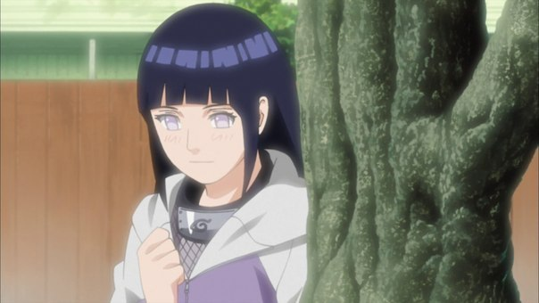
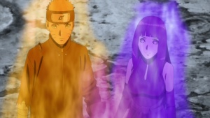

Хината из клана Хьюго которые обладают способностью Бьякуганом.
Бьякуганом — улучшенным геномом, который дарует им расширенное поле зрения и способность видеть сквозь твёрдые
предметы и даже, помимо всего прочего, систему каналов чакры.
Детство Хинаты Хьюго

Хината-куноичи и бывшая наследница клана Хьюга. Из-за своего смиренного нрава её отец сомневался в готовности
Хинаты вести за собой клан и в её предназначении быть ниндзя, поэтому он лишил её своего положения. Тем не
менее,
Хината выстояла и, прежде всего, благодаря Наруто Узумаки нашла себе пример для подражания и свою любовь. Будучи
членом Команды 8, она стремилась стать сильнее и измениться, пусть даже и не намного.
У Хинаты темно-синие
волосы и бледная кожа, также как и у всех членов клана Хьюга, у нее глаза — Бьякуган, цвета лаванды в аниме.
Когда
она использует Бьякуган, её глазные вены начинают расширяться. В первой части у Хинаты короткие волосы в стиле
химэ с челкой и прядями, обрамляющими её лицо. Она носит меховую куртку кремового цвета с капюшоном с символом
огня на спине, правом и левом рукаве, темно-синие штаны и сандалии шиноби. На правой ноге носит сумку для кунаев
на повязке. Как генин, она носит протектор Конохагакуре вокруг шеи.
В финале Экзамена на Чуунина Хината носит голубую блузку с длинными рукавами и высоким воротником, и синие брюки. Во время спарринга с Ханаби она носит черную одежду с сетчатым вырезом на груди. Во второй части волосы девушки отросли, а грудь увеличилась, что позволило её форме быть более женственной. Теперь Хината носит лавандовую куртку с длинными рукавами на застежке молнии, под которой носит сетчатую футболку, синие брюки и черные сандалии. На правой ноге сумка для кунаев на повязке, вокруг шеи протектор чёрного цвета. В Четвёртой Мировой Войне Шиноби она надевает стандартную униформу её деревни, включая бронежилет, однако протектор Союзных Сил Шиноби отсутствует. Подробное описание здесь...
Взросление и Карера Хинаты Хьюго
 Два года спустя, волосы Хинаты стали немного длиннее. Она носит сиреневое короткое кимоно без рукавов с вертикальными линиями, перевязанный фиолетовым поясом вокруг талии. Снизу носит короткие синие шорты, длинные чулки и черные сапоги вместо сандалей. На правой ноге носит сумку для кунаев на повязке. Внe миссии она носит длинную серую кофту под розовой рубашкой. Снизу черные брюки под длинной юбкой кремового цвета с розовыми горизонтальными полосами и пара коричневые сандалии. Сверху одевает лавандовую куртку с капюшоном. Во время брачной церемонии с Тонери Хината носит свадебный наряд, состоящий из длинного чёрного платья без рукавов с высоким воротником, длинные перчатки, а на голове большой тюрбан вместе с покрывалом с желтыми полосками. На ушах желтые серьги в виде полумесяцев. Во время ее свадьбы с Наруто она одета в традиционное белое свадебное кимоно, на волосы прикреплен цветок и у неё накрашенные губы. Став матерью, Хината носит белую рубашку с длинными рукавами и воротником, на которой сверху носит лавандовое платье и синие штаны. Ее волосы связаны в хвост. Вскоре она подстригает свои волосы и теперь носит белую кофту с длинными рукавами, сверху полосатую кроткую ветровку с капюшоном сиреневого цвета, снизу светло-коричневые короткие шорты и длинные сапоги.
Хината застенчивая, задумчивая, спокойная, добрая и очень вежливая: обращаясь к людям, она использует суффиксы. Ещё одно свойство её натуры — нежность, которую Неджи и отец Хинаты считают недостатком, мешающим ей быть шиноби. Хината бывает также чувствительной из-за воспитания и трудного детства, вследствие которого она идентифицирует себя с Наруто. В детстве из-за чрезвычайно высоких требований, предъявляемых к ней как к наследнице клана, и изнуряющих тренировок с семьей Хината стала очень робкой и не уверенной в себе. Однако она показала себя очень хорошим ниндзя (чего её отец вначале не признавал), так как постоянно стремилась изменить себя к лучшему, хотя изначально отсутствие уверенности мешало ей, особенно на миссиях. Постепенно Хината становится более открытой и обретает уверенность в собственных силах. Во время Четвёртой Мировой Войны Шиноби она принимает участие в сражениях и проявляет себя как упорную, стойкую и сильную личность, готовая сражаться за свою деревню, друзей и семью. Эти новые черты характера Хинаты ярко проявились после смерти Неджи: хотя девушка искренне горевала и оплакивала двоюродного брата, она всё же смогла взять себя в руки и не позволила Наруто сломаться и упасть духом.
Взрослая Хината Хьюго
 Растущая уверенность Хинаты исходит в основном от любимого ей человека — Наруто, в котором её восхищает его энтузиазм и несгибаемая воля к победе. В начале, хоть Хината очень застенчива при виде Наруто, она одна из немногих, кто искренне верит в него. Во время нападения Пейна Хината наконец призналась в любви Наруто и готова была рискнуть собственной жизнью, чтобы защитить его. Её чувства к Наруто очень крепкие и искренние, что подтверждается под действием Бесконечного Цукуёми, где она мечтает быть его возлюбленной. Два года спустя, Хината всё так же робеет в присутствии Наруто, хоть и пытается объясниться ему в своих чувствах разными путями. Она стала очень эмоциональной, когда сделала ошибочный вывод, что шанс быть с Наруто утерян. По иронии судьбы, когда сам Наруто влюбляется в неё, Хината не догадывается об этом до тех пор, пока он сам случайно не признаётся ей. В конце концов её желание, наконец, сбывается: через несколько лет Хината становится женой Наруто и матерью его детей.
В конце первой части Хината смогла улучшить отношений со своей семьей и начала тренироваться с ними. Она особенно заботливо относится к своей младшей сестре — Ханаби, это можно увидеть в одном из эпизодов аниме, где Хината не желала причинить ей боль во время их матча, в которой одна из них могла стать наследницей клана. Через два года после Четвертой мировой войны шиноби, когда Ханаби похищает Тонери Ооцуцуки, то Хината идёт на многое, чтобы спасти сестру, она лично хотела отправится на её поиски и "согласилась" выйти замуж за её похитителя. Хината прекрасно ладит со своими товарищами по команде и сенсеем, которые относятся к ней взаимностью, также хорошо все о ней знают, что означает, она к ним более откровенна чем к своей семье.
огда она становится матерью, то сам Наруто советует детям не злить её. Однако она любит проводить время с
семьей.
Как мать Хината очень внимательная, заботливая и оберегающая свою семью, например она защищала Химавари и
пыталась
спасти мужа во время нападения Момошики и Киншики Ооцуцуки на Коноху. Она также отказывается отпускать Боруто с
Саске в сражение против похитителей её мужа, но, тем не менее, понимает, что ей нужно лишь верить в сына.
Все
остоьное вы можете узнать по ссылке. Подробное
описание здесь...